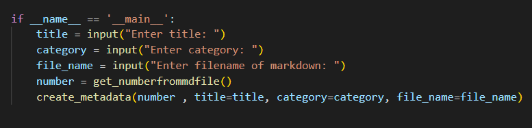

I'm trying to build a habit of programming every day. I use this blog as a method of highlighting some of the programming I do throughout the day and any cool things that I come across.
Well, the metadata at the top of my markdown files usually look like this:
Every time I had to create a new post, I had to copy the metadata from the previous markdown file and paste it into the new one, but I'm a programmer so to save 30 seconds of copy and pasting, I spent the whole day trying to automate it.
To generate metadata, I needed to change three things, the date, the category and the post number which helps me find the next and previous posts, check the implementation here
I created a python file called create_mdfile.py to handle generating metadata and also creating a markdown file within the script. In the future, when the number of markdown files increase, I would have to keep looking for the last post created to find the number from the metadata and then increment it when creating a new post.
To generate it dynamically I used this code:
The create_mdfile.py takes input when run, the title, category and markdown filename.
See here:

After entering input, the create_metadata function is called with the arguments number, title, category and filename. This creates a markdown file file_name.md with metadata written to it.